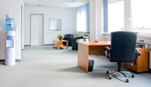
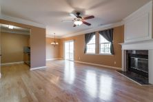

Services
Commercial & Residential Cleaning Experts


Our Specialty…
- Carpet Cleaning
- Furniture Cleaning
- Tile and Grout Cleaning
- Hardwood Cleaning
- Water Extraction
PRISO-CLEAN business and office cleaning services include:
-Daily, weekly, and monthly cleaning services based on your schedule
-Cleaning for hotels and businesses
-Waiting and reception area cleaning
-Restroom cleaning and sanitation
-Green cleaning practices and materials
Call PRISO-CLEAN today at 317-797-1133 to learn more, or request a quote for office cleaning services on your first
commercial cleaning service for free!
Full List of Commercial Services:
Office Areas, Waiting/Conference Rooms, Hallways, Stairs, Entries, etc
-All areas including ceilings and walls dusted-all surfaces -Cushions and pillows fluffed and straightened
-Hard surface floors swept and wet mopped
-Carpeted floors vacuumed
-Glass tables cleaned
-Picture frames dusted
-Lamp shades wiped down or dusted
-Blinds dusted and wiped, if needed
-Telephones sanitized and monitors wiped down
-Waste receptacles emptied, damp wiped, and liners replaced
Restrooms All surfaces dusted and sanitized, as needed
-Sink scrubbed, rinsed and buffed
-Fixtures cleaned
-Tub and/or shower thoroughly cleaned and rinsed, if applicable
-Toilets disinfected inside and out, including base and behind
-Vanity top cleaned
-Mirrors cleaned
-Floor vacuumed or swept and mopped
Upon Request
-Smudges removed around doorjambs, push plates, light switches, glass partitions, counters and unobstructed work areas
-Soil removed from entrance door frames, handles, glass and threshold
-Light general straightening
-Windows, interior and exterior